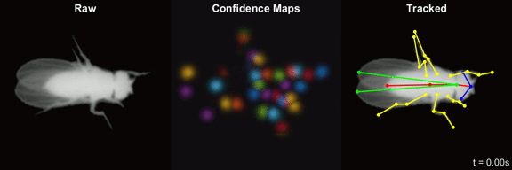
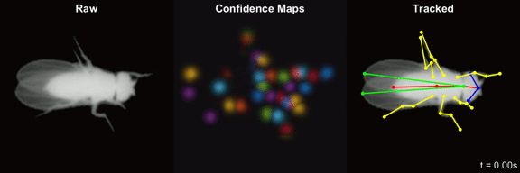

Social LEAP Estimates Animal Pose (sLEAP)

Social LEAP Estimates Animal Pose (sLEAP) is a framework for multi-animal
body part position estimation via deep learning. It is the successor to LEAP. sLEAP is written entirely in
Python, supports multi-animal pose estimation, animal instance tracking, and a labeling/training GUI that
supports active learning.
Installation
sLEAP is compatible with Python versions 3.6 and above, with support for Windows and Linux. Mac OS X works but without GPU support.
Windows
Since sLEAP has a number of complex binary dependencies (TensorFlow, Keras, OpenCV), it is recommended to use the
Anaconda Python distribution to simplify installation.
Once Anaconda has been installed, go to start menu and type in Anaconda, which should bring up a menu entry
Anaconda Prompt which opens a command line with the base anaconda environment activated. One of the key
advantages to using Anaconda Environments is the ability to create separate Python installations (environments) for
different projects, mitigating issues of managing complex dependencies. To create a new conda environment for
sLEAP related development and use:
(base) C:\> conda create -n sleap_env -c defaults -c sleap sleap python=3.6 -y
Once the environment is finished installing, it can be activated using the following command:
(base) C:\> conda activate sleap_env
(sleap_env) C:\>
Any Python installation commands (conda install or pip install) issued after activating an
environment will only effect the environment. Thus it is important to make sure the environment is active when issuing
any commands that deal with Python on the command line.
sLEAP is now installed in the sleap_env conda environment. With the environment active,
you can run the labeling GUI by entering the following command:
(sleap_env) C:\> sleap-label
Linux
No Linux conda packages are currently provided by the sLEAP channel. However, installing via pip should not
be difficult on most Linux systems. The first step is to get a working version of TensorFlow installed in your Python
environment. Follow official directions for installing TensorFlow with GPU support. Once TensorFlow is installed, simple
issue the following command to install sLEAP
pip install git+https://github.com/murthylab/sleap.git
sLEAP is now installed you can run the labeling GUI by entering the following command:
Mac OS
The installation for Mac OS X is the same as for Linux, although there’s no TensorFlow GPU support for Mac OS.
You can install TensorFlow and sLEAP together by running
pip install tensorflow git+https://github.com/murthylab/sleap.git
Research
If you use sLEAP in your research please acknowledge …
Contributors
Talmo Pereira, Princeton Neuroscience Institute, Princeton University
Nat Tabris, Princeton Neuroscience Institute, Princeton University
David Turner, Research Computing, Princeton University

Social LEAP Estimates Animal Pose (sLEAP)¶
Social LEAP Estimates Animal Pose (sLEAP) is a framework for multi-animal body part position estimation via deep learning. It is the successor to LEAP. sLEAP is written entirely in Python, supports multi-animal pose estimation, animal instance tracking, and a labeling/training GUI that supports active learning.
Installation¶
sLEAP is compatible with Python versions 3.6 and above, with support for Windows and Linux. Mac OS X works but without GPU support.
Windows¶
Since sLEAP has a number of complex binary dependencies (TensorFlow, Keras, OpenCV), it is recommended to use the Anaconda Python distribution to simplify installation.
Once Anaconda has been installed, go to start menu and type in Anaconda, which should bring up a menu entry Anaconda Prompt which opens a command line with the base anaconda environment activated. One of the key advantages to using Anaconda Environments is the ability to create separate Python installations (environments) for different projects, mitigating issues of managing complex dependencies. To create a new conda environment for sLEAP related development and use:
Once the environment is finished installing, it can be activated using the following command:
Any Python installation commands (
conda installorpip install) issued after activating an environment will only effect the environment. Thus it is important to make sure the environment is active when issuing any commands that deal with Python on the command line.sLEAP is now installed in the
sleap_envconda environment. With the environment active, you can run the labeling GUI by entering the following command:Linux¶
No Linux conda packages are currently provided by the sLEAP channel. However, installing via
pipshould not be difficult on most Linux systems. The first step is to get a working version of TensorFlow installed in your Python environment. Follow official directions for installing TensorFlow with GPU support. Once TensorFlow is installed, simple issue the following command to install sLEAPsLEAP is now installed you can run the labeling GUI by entering the following command:
Mac OS¶
The installation for Mac OS X is the same as for Linux, although there’s no TensorFlow GPU support for Mac OS. You can install TensorFlow and sLEAP together by running
Research¶
If you use sLEAP in your research please acknowledge …
sLEAP Package¶
Contributors¶
Talmo Pereira, Princeton Neuroscience Institute, Princeton University
Nat Tabris, Princeton Neuroscience Institute, Princeton University
David Turner, Research Computing, Princeton University
Indices and tables¶
Index
Module Index
Search Page